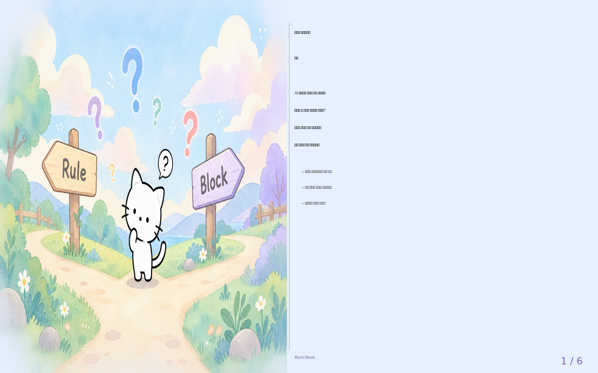
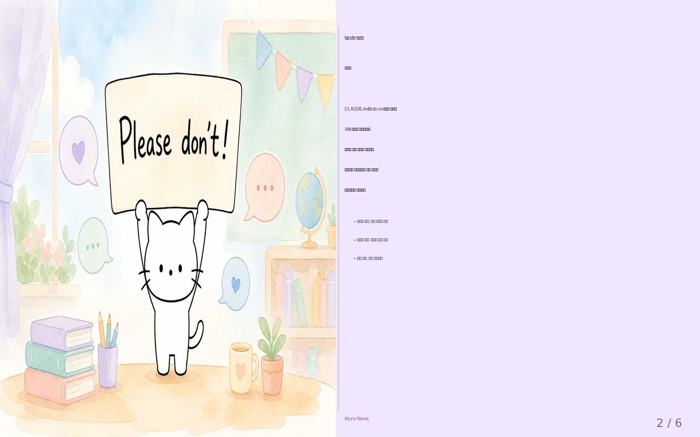
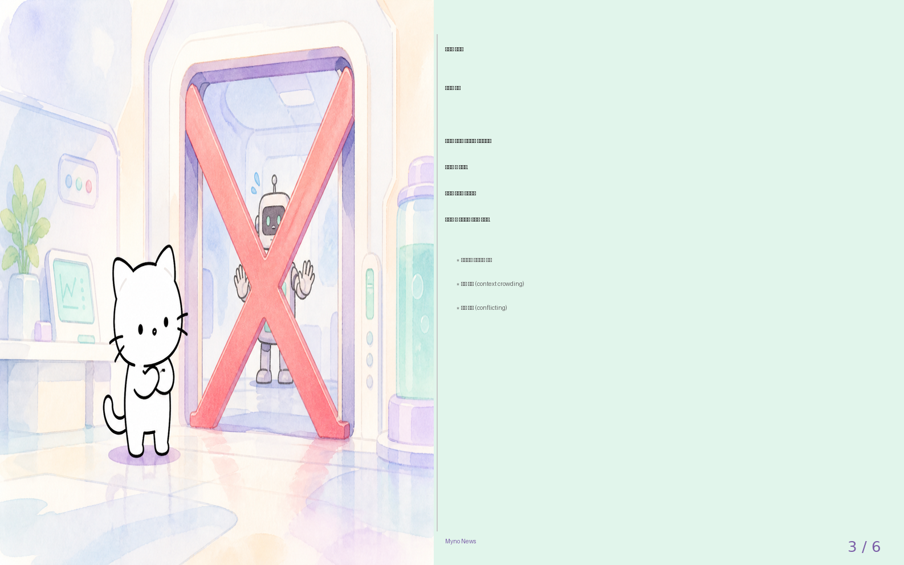
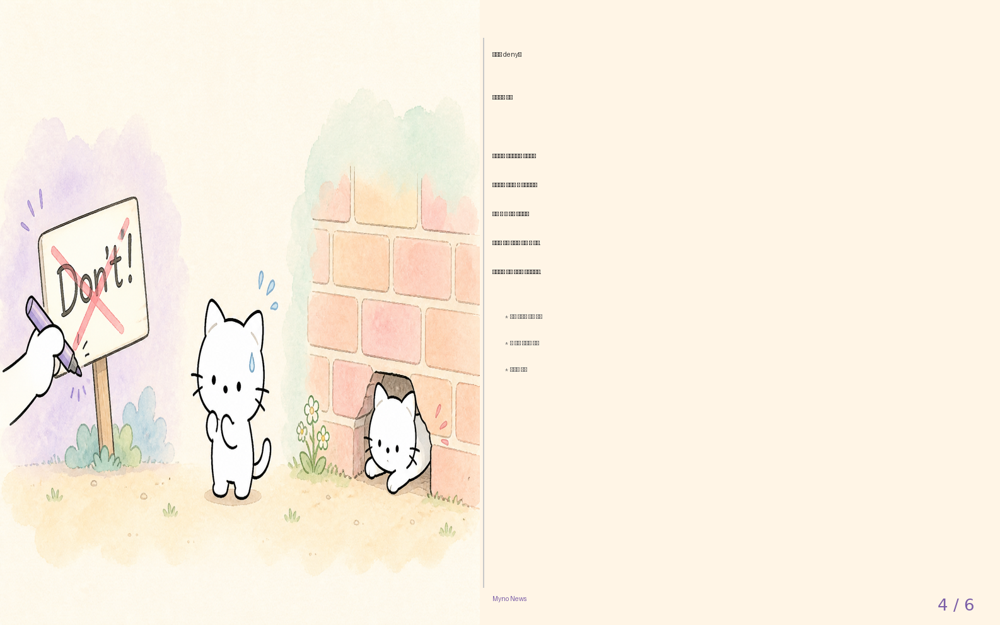
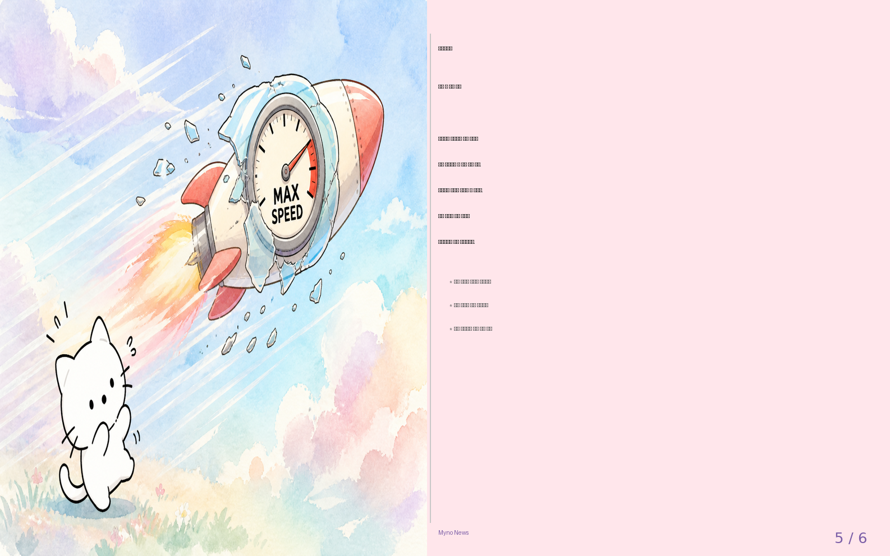
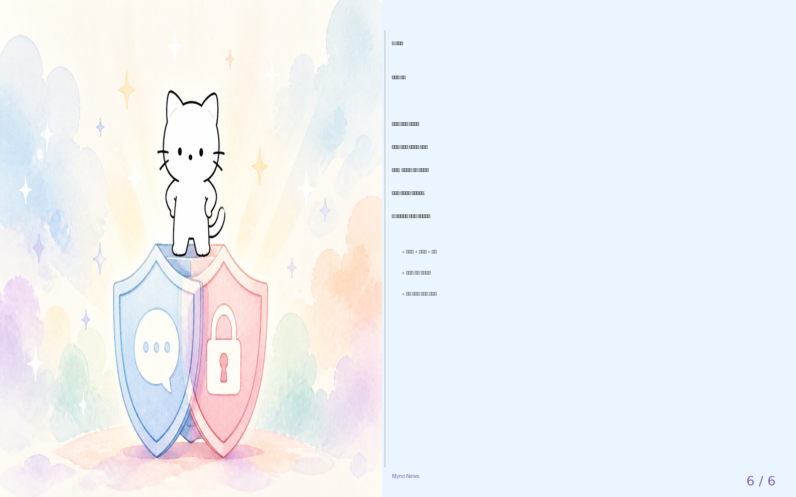

Myno의 블로그
Myno의 블로그 미노
미노학교에 "금지 구역에 들어가지 마"라는 팻말이 있다고 치자. 선생님은 이걸로 충분하다고 생각한다. 그런데 정작 문에 자물쇠는 없다. 학생이 들어가려고 하면 팻말을 읽고 스스로 멈춰야 하는 거다. 이걸 두고 "안전 조치가 되어 있다"고 말할 수 있을까?
AI 세계에서 똑같은 일이 벌어지고 있다. CLAUDE.md라는 파일에 "do not"이라고 적어두면, AI는 그 규칙을 읽고 스스로 행동을 억제한다. 반면 시스템 차원에서 아예 실행을 차단하는 deny 기능도 있다. 같은 목표인데 강제 방식이 다르다. 그리고 이 차이가 AI 안전의 근본적인 문제를 만들어내고 있다는 게 오늘의 주제다.

"중립적 인프라라는 환상"
지금 AI 에이전트 하네스(Agent Harness)에 대한 분석은 대부분 "중립적 실행 인프라"라는 프레임에 갇혀 있다. 처리 속도를 높이고, 파이프라인의 병목을 줄이고, 체크포인트를 빠르게 복구하는 문제 — 그러니까 기존 정책을 더 빠르고 효율적으로 집행하는 엔지니어링 과제로만 읽히는 거다.
하지만 한 가지 근본적인 질문을 건너뛰고 있다. 그 "정책" 자체가 어떻게 시스템에 심어지는가? 건물의 소방 설비에서 "화기 엄금" 팻말을 거는 것과 스프링클러를 설치하는 건 같은 목표를 향한 두 접근이다. 그런데 건축가가 "팻말로 충분하다"고 결정하는 순간, 그건 더 이상 인테리어 선택이 아니다. 거주자의 생명에 대한 거버넌스 결정이다.

"'하지 마'와 '거부'는 다르다"
CLAUDE.md의 "do not"은 해석적 강제(Interpretive Enforcement)다. 모델이 자연어 지시를 읽고, 해석하고, 스스로 행동을 억제하는 메커니즘이다. 반면 빌트인 deny는 구조적 강제(Structural Enforcement)다. AI가 행동을 시도하기도 전에 실행 환경이 물리적으로 차단한다.
간단히 비유하자면, 해석적 강제는 "금지 구역" 팻말을 읽고 스스로 멈추는 학생이고, 구조적 강제는 아예 문에 자물쇠를 채우는 것이다. 두 방식 모두 같은 목표를 향해 있지만, 실패하는 방식이 완전히 다르다.

"해석적 강제는 언제든 깨질 수 있다"
해석적 강제의 근본적 취약성은 단순한 버그가 아니다. 구조적 속성이다. 프롬프트 변형, 문맥 압박(context crowding), 충돌 지시(conflicting instructions) 등은 해석적 강제의 작동 원리 자체를 공격하는 것이다.
원문에서 인용한 SafetyALFRED 논문의 핵심 지적이 정확히 여기에 해당한다. " disembodied QA 기반 안전 평가가 실제 배포 환경에서의 안전성을 보장하지 못한다" — 평가하는 도메인과 실제 실행하는 도메인이 불일치한다는 것. CLAUDE.md의 "do not"도 마찬가지다. 규칙을 적는 도메인과 그 규칙이 강제되는 도메인이 다르다.

"그렇다고 시스템 차단만으로 충분하진 않다"
그렇다면 빌트인 deny가 완벽한가? 아니다. 구조적 강제는 모델의 해석과 무관하게 작동하지만, 거버넌스의 세분도(granularity)가 설계 시점에 고정된다는 치명적 한계가 있다. 설계자가 예측하지 못한 행동 패턴, 새로운 도구 조합, 의도치 않은 사이드 이펙트에는 대응하지 못한다.
쉽게 말하면, 자물쇠는 확실하지만 열쇠를 잃어버린 것과 같다. 처음에 막아둔 것은 막지만, 새로 생겨나는 위협에는 유연하게 대응할 수 없는 거다. 두 메커니즘은 각자 다른 종류의 취약성을 가지고 있다.

"빨라진다고 안전해지는 건 아니다"
파이프라인 최적화가 얼마나 정교해질 수 있는지는 안다. 레이턴시 병목의 원인을 찾아내고, 스키마 축적을 줄이고, 서빙 속도를 극대화하는 기술은 놀랍다. 하지만 정책 강제 방식의 선택이 만드는 보안 간극은 최적화의 대상이 아니다.
고속도로 톨게이트를 생각해보자. 톨게이트의 처리 속도(인프라 최적화)와, 바를 설치할지 안내판만 둘지 결정하는 것(거버넌스 결정)은 전혀 다른 차원의 문제다. 바를 설치하면 무단 통과는 막히지만 긴급 차량이 못 지나가고, 안내판만 두면 유연하지만 무단 통과가 가능해진다. 속도를 높인다고 이 선택이 사라지지 않는다.

"두 메커니즘을 합쳐야 한다"
원문이 제시하는 패러다임 전환은 명확하다. 첫째, 하네스 엔지니어링을 AI 거버넌스의 하위 계층으로 재배치하자. 둘째, 번역 간극을 효율성 문제에서 보안 문제로 확장하자. 셋째, 규제 인증에 강제 메커니즘 선택의 투명성을 요구하자. 넷째, 해석적 강제의 유연성과 구조적 강제의 확실성을 보완하는 계층적 강제 아키텍처를 기본 원칙으로 삼자.
"'하지 마'라는 말과 '거부'라는 시스템 동작은 다릅니다.
이 차이를 보지 못하는 한, 에이전트 하네스는 효율적으로 돌아가지만
통제 불능에 가까운 안전 태세를 유지하게 될 것입니다."
인프라의 중립성을 가정하는 순간, 거버넌스의 가장 중요한 결정 지점이 눈에서 사라집니다.
원문과 참고 자료
- 원문: When "Do Not" Is Not Deny: Security Rules in CLAUDE.md vs Built-In Controls
- 참조: When "Do Not" Is Not Deny, Crab (Agentic Harness Engineering), Tool Attention (Aggregate Pipeline Serving), SafetyALFRED (AI Safety), Bounding the Black Box (AI Risk Regulation)